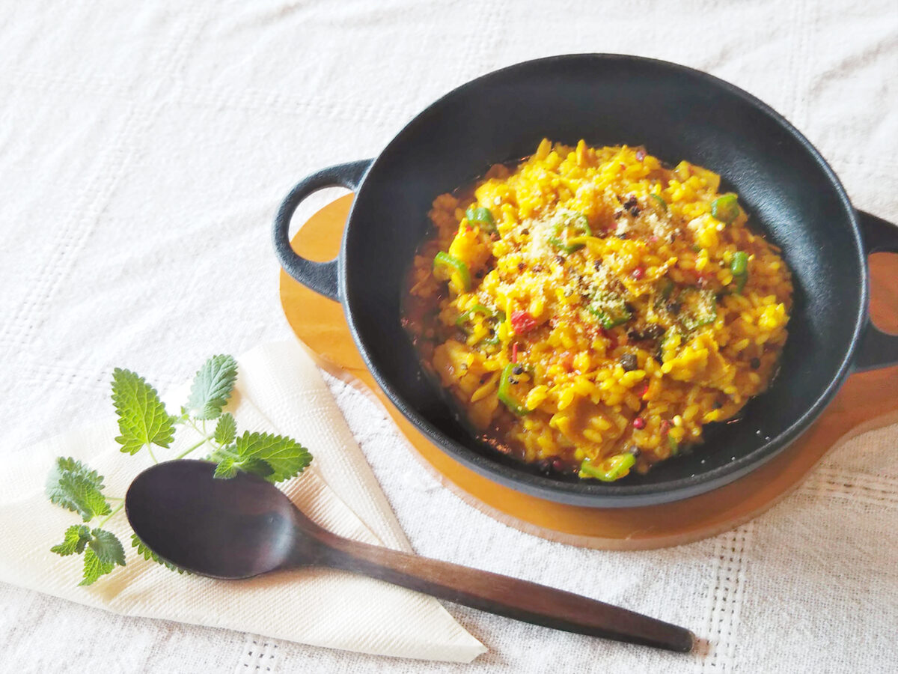

体の芯から温まる寒い冬におすすめのレシピ！
たっぷりお野菜と秋ウコンパウダーを使って
体が温まるリゾットのレシピを考えました。
秋ウコンパウダーに含まれるクルクミンなどが
免疫力アップに役立つと言われています！
材料
| オリーブ油 適宜 | 秋ウコンパウダー 小さじ2 |
| バター １０ｇ | トマトピューレ（or トマトジュース） 大さじ2 |
| A：キノコ ６０ｇ （お好みのもの) | ローリエ 1枚 |
| A：ベーコン 薄切り２枚（刻んでおく） | 粒こしょう 少々 |
| A：トマト １/２個（１㎝角） | オクラ2本（輪切り） |
| 塩、こしょう 適宜 | |
| 生米（洗っていない米） １合 | |
| 水 ３カップ | |
| 白ワイン 大さじ2 |
作り方
1.水と白ワインに秋ウコンを入れてなじませておく。
2.鍋にオリーブ油を温め、バターを加えたらAの具材を炒める。
3.お米を入れて、半透明になるまで炒める。
4.①で作った秋ウコンパウダー入りの水と白ワイン、トマトピューレ、ローリエ、粒こしょうを加えて強めの中火で10分程煮る。
5.お米にウコンの色がつきアルデンテ（固めの状態）になったらオクラを加え、 塩こしょうで味を整える。
※レシピの無断転載等は固くお断りさせて頂きます。